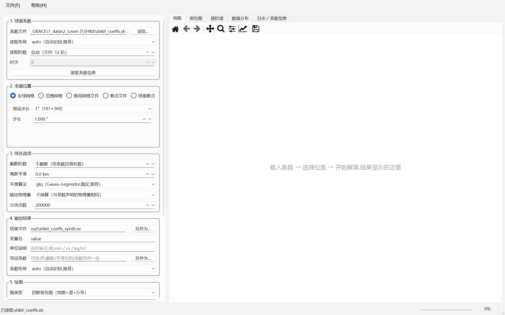
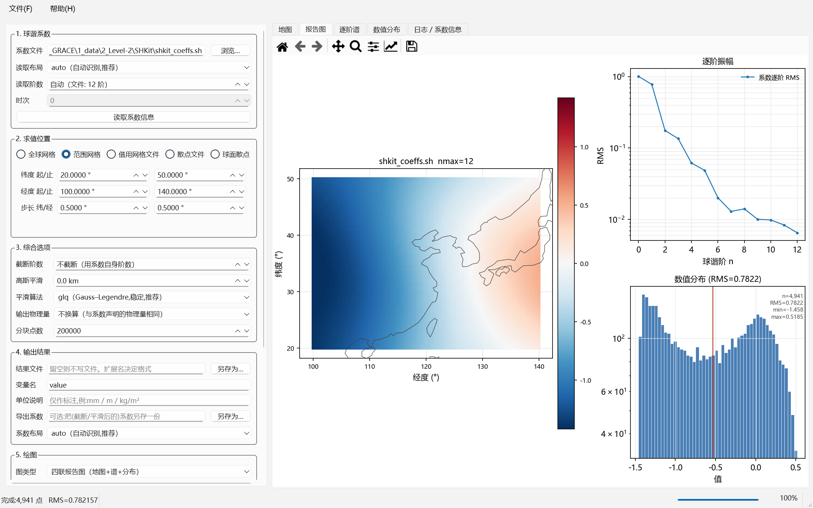
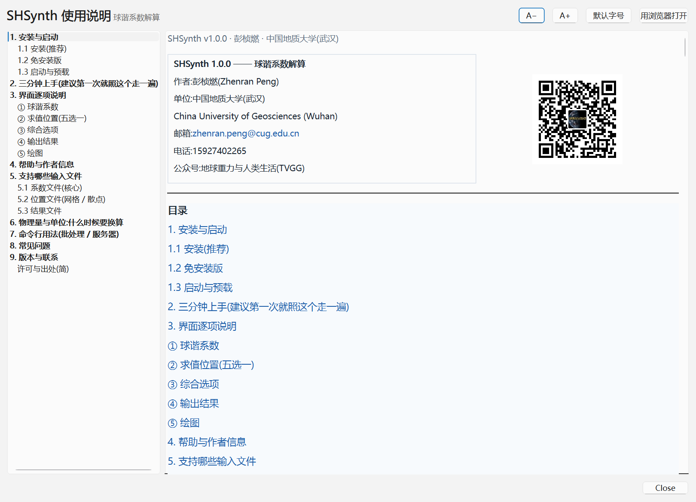
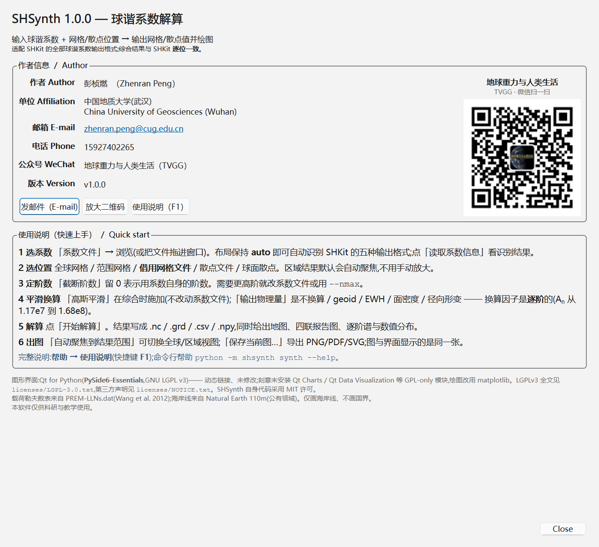

作者:彭桢燃(Zhenran Peng)
单位:中国地质大学(武汉)
China University of Geosciences (Wuhan)
邮箱:zhenran.peng@cug.edu.cn
电话:15927402265
公众号:地球重力与人类生活(TVGG)

| SHSynth 2.0.0 —— 球谐系数解算 作者:彭桢燃(Zhenran Peng) 单位:中国地质大学(武汉) China University of Geosciences (Wuhan) 邮箱:zhenran.peng@cug.edu.cn 电话:15927402265 公众号:地球重力与人类生活(TVGG) | |
SHSynth — 球谐系数解算(综合)
| 软件 | SHSynth v2.0 —— 球谐系数解算(综合) |
| 用途 | 输入球谐系数 + 网格或散点位置 → 输出网格或散点值 + 出图 |
| 作者 | 彭桢燃(Zhenran Peng),中国地质大学(武汉) |
| 邮箱 | <zhenran.peng@cug.edu.cn> |
| 电话 | 15927402265 |
| 公众号 | 地球重力与人类生活(TVGG) |
| 许可 | 本软件代码 MIT 许可;仅供科研与教学使用 |
一句话:给它一套球谐系数 + 你想看的位置(全球网格、某个区域、或者一堆散点), 它把系数算成那些位置上的值,写出文件并画成图。 系数文件不用挑格式:它认得 SHKit 的五种输出格式(也认得同族的m2py/gridSHconvert三角格式),打开就能读。
双击 SHSynth_Setup_v2.0.exe,按向导点下一步即可。
%LOCALAPPDATA%\Programs\SHSynth;SHSynth → 有四个入口: SHSynth 球谐系数解算 / 使用说明 (HTML) / 作者信息 / 卸载 SHSynth。解压 SHSynth_v2.0.zip 到任意目录(建议路径里不要有空格),双击 SHSynth.exe。
SHSynth.exe 或桌面快捷方式;SHSynth.exe D:\data\model.sh
启动后的界面分左右两部分:左边是参数面板(五组,按顺序填), 右边是结果页签(地图 / 报告图 / 逐阶谱 / 数值分布 / 日志)。

out\field.nc(或 .grd / .npy / .csv)。out\report.png。想少走一步:界面上任一「浏览…」都能打开资源管理器,拖放文件也可以。
| 控件 | 怎么填 |
|---|---|
| 系数文件 | 你要解的系数文件。支持 .sh .txt .csv .dat .tsv .gfc .npy .npz(文本和 gfc 还支持 .gz 压缩),详见 第 5 节 |
| 读取布局 | 保持 auto(自动识别,推荐)。只有在自动判断错了、而且你确定它是什么格式时才手动指定 |
| 读取阶数 | 0 = 用文件自身的最高阶。想让结果更平滑可以先填一个小一点的阶数(等效于"截断") |
| 时次 | 系数文件里若有多个时次(例如 GRACE 的逐月模型),这里选第几个。只有一个时次时此项灰掉不可用 |
| 读序列(目录/清单 → 带日期的序列) | v2.0。选一个装着 GSM-*.gfc 的目录(或 .txt 清单),一次读成带真实日期的系数序列。日期优先取 gfc 头,头里没有就退回文件名 |
| 历元范围 | v2.0。只用当前时次(与 v1.0 完全一致)/ 整条序列(批量综合) / 按起止时次批量。下面会显示时间轴摘要(跨度、间隔、缺测、重复) |
| 读取系数信息 | 立刻读一遍文件,在日志里打印:识别出的布局、最高阶、时次数、物理量标签、时间轴摘要、以及任何警告。建议每次先点一下 |
v2.0 的批量流程:① 点『读序列』选 gfc 目录 → ② 『历元范围』选『整条序列』 → ③ 设好求值位置 → ④ 点『综合整条序列』。 结果会出现在新增的『时间序列』『水平形变』『动画』『逐历元诊断』四个页签上。 1° 全球 203 个历元大约 0.3 秒(自动走 FFT 快路径)。
⚠️ 先看"日志"页签里的警告再信数字。 例如"文件头写的阶数和行数不一致" 这类信息只在这里出现。
| 选项 | 说明 | 什么时候用 |
|---|---|---|
| 全球网格 | 给一个步长(预设 0.5°/1°/2°/2.5°/5°,也可以自己填)。纬度 -90..90,经度 0..360(不含端点,不会重复首尾经线) | 想在全球尺度上看一张完整地图 |
| 范围网格 | 自己填纬度起止、经度起止、步长 | 只关心某个区域(例如东亚 5–55N / 60–140E),这样又快又省内存 |
| 借用网格文件 | 用它已有的格点作为求值位置 | 想把自己的结果和某个现成网格逐格点直接对比(差值图)时 |
| 散点文件 | 用文件里的经纬度作为求值点(不需要该文件有数值列) | 台站、航迹、验潮站等不规则点位 |
| 球面散点 | 不给点位,在全球球面上均匀取 N 个点(Fibonacci 采样) | 只要一个统计意义上的全球抽样,不要规则网格 |
散点文件的列怎么指定:选好文件后,「纬度列 / 经度列」会自动读表头变成下拉框:
latitude(第 3 列)),并自动选中软件判断出的那一列;第1列、第2列…;文件里夹着台站名之类的文本列不影响读取,那一列会被忽略并给一条警告。
| 控件 | 说明 |
|---|---|
| 截断阶数 | 只用前 N 阶(0 = 全部)。系数阶数高、噪声大,或者只想看长波时用 |
| 高斯平滑 | 平滑半径(km)。在计算时施加,不会改动你的系数文件。半径要和阶数匹配才有意义:同样 300 km,12 阶的场几乎看不出变化,而 60 阶会被压掉不少;3000 km 会把细节基本抹平 |
| 平滑算法 | glq(Gauss–Legendre 求积,稳定,推荐)/ frc(经典递推,快,大半径时精度差) |
| 输出物理量 | 不换算(默认)/ 水准面高 / 等效水高 EWH / 面密度 / 径向形变 / 水平形变 u_h。这是换算,不是显示选项 —— 见 第 6 节 |
| 输出分量 | v2.0。标量场(默认)/ 水平形变·北分量 u_N / 水平形变·东分量 u_E / 水平形变·北+东(矢量)。选水平形变时会自动把『输出物理量』切到水平形变 —— 两者的逐阶因子不同(水平是 R·l′ₙ/(1+k′ₙ)),混用会差好几个数量级 |
| 分块点数 | 内存控制。默认 20 万点/块;几百万点也不需要改。内存紧张时调小(不影响结果) |
| 控件 | 说明 |
|---|---|
| 结果文件 | 要写出的结果。扩展名决定格式:网格用 .nc / .grd / .npy / .csv / .txt;散点用 .csv / .txt / .dat / .tsv / .npy。留空则不写文件 |
| 变量名 | 写 netCDF 时的变量名(默认 value) |
| 单位说明 | 只是写进文件/图上的说明文字(例如 mm、m EWH),不做任何换算 |
| 导出系数 | 可选:把(截断/平滑后的)系数另存一份,布局可选 triangle / gmfcsv / gfc / npy / npz |
| 系数布局 | 上一条用的布局。要交回旧软件用 triangle;要给别人通用的用 gfc |
| 控件 | 说明 |
|---|---|
| 场序列输出 | 整条序列的结果写到哪里。.nc 会带真实时间坐标(不是只有一叠没有日期的图);矢量模式下一个文件里装 north_displacement / east_displacement 两个变量。留空则只在界面显示 |
| 诊断表输出 | 逐历元诊断 .csv:每行一个历元,含日期、点数、有限比例、min/max/mean/RMS、缺测间隔、警告数 |
| 去均值 | 三选一(v2.0):不去均值(原始场)(默认)/ GRACE 惯例(2004-01-01..2010-12-31 平均) / 全时段平均 / 自定义时段…。GRACE 的 GSM 文件装的是完整静态重力场(C₀₀=1、C₂₀≈−4.8e-4),不做去均值换成 EWH 会得到几万米的常量场而不是水。实测:不去 → 逐历元 RMS 53 828 m;去掉 → 38–153 mm |
| 自定义时段 | 选『自定义时段…』时启用。写法很宽松:2004-01-01 / 2004-01 / 2004 / 2004.5 都认;只填一边也行(起点补 01-01,终点补 12-31)。下面那行会实时算出这次会用哪一段:"→ 将用 84/96 个历元(2004-01-15 .. 2010-12-15,占 88%)做基准" |
| 综合整条序列 | 按『历元范围』选的历元批量综合。规则整圈经度网格自动走 FFT 快路径;散点/区域网格走直接法,日志里会写明走了哪条路 |
为什么去均值要选而不是勾一下:它决定了整个异常场的静态基准。 GRACE 惯例(2004–2010 平均)与全时段平均算出来的参考场不是一回事 —— 实测在真实 CSR 序列上,两者的 C₀₀ 参考值差 1.3e-10(静态场量级 ~1), 换成 EWH 就是几厘米量级的系统差。所以程序不替你选,而且会把实际用了 哪一段历元打印出来。窗口里一个历元都没有时直接报错,绝不悄悄退化成全时段。
⚠️ 你 legacy 脚本里的dur_mascon和它的注释对不上。3_processed/read_GRACE_SH_preprocess_postprocess_SH60.m里写的是%% remove the mean of 2004-2010配dur_mascon = 90:150,但在 CSR RL06 (203 历元)上90:150实际落到 2009-12..2016-01 —— 拿它跑 RL06 会 静默地用 2009–2016 当基准。同位置 GRACE-FO 版用的是19:90,对应 2004-01..2009-12。所以本软件按日期定口径;要精确复刻19:90就选 『自定义时段』填2004-01-01..2009-12-31。
右侧页签(v2.0 新增四个):
viridis)+ 位移箭头(quiver,自动抽稀;极点不画箭头);▶ 播放 / ⏸ 暂停、◀ ▶ 单步、 拖动滑条定位到某一历元、帧率(0.2–60 fps)、循环、导出 GIF…。 角标显示 第几帧 / 共几帧 + 日期;在『逐历元诊断』里点某一行, 动画页也会跟着跳到那一历元(同一件事在两页保持一致)。动画的配色是固定的:颜色范围取整段序列的稳健对称范围,不逐帧定标。 逐帧各自定标的话,动画会随每历元的极值"闪",眼睛看到的"变化"其实是配色在变。 实际用的范围会写进日志,导出时也会回报。 导出走后台线程,渲染期间界面不卡;.gif只需要 Pillow(装 SHSynth 时已带上);.mp4需要额外装imageio+imageio-ffmpeg,没装会明确报错并让你改用 GIF, 不会把视频悄悄降级成一张静止图。
| 控件 | 说明 |
|---|---|
| 图类型 | 四联报告图(默认:地图+逐阶谱+直方图+统计)/ 地图 / 逐阶谱 / 数值分布 / 不出图 |
| 图片文件 | 留空则只在界面显示;填了就同时存盘(按扩展名 PNG / PDF / SVG / JPG) |
| DPI | 出图分辨率,期刊插图建议 ≥ 300 |
| 配色 | 正负异常用发散色系(如 RdBu_r)最直观;全是正值可换 viridis |
| 叠加等值线 | 网格图上加等值线,报告图里更适合讲解 |
| 画海岸线 | 默认开。地图只画海岸线,不画国界(见下) |
| 配色关于 0 对称 | 异常场保持勾选;若你的场全是正值,取消勾选能让色阶铺满 |
| 自动聚焦到结果范围 | 默认勾选:区域结果自动缩放到数据范围,不会在全球视角下变成一小块 |
| 聚焦 / 全球视图 切换 | 一键在两种视图之间来回切,立刻重画(不用手动框选放大) |
为什么地图上没有国界? 这是有意的:国界数据自带主权划线方式,画在地图上容易 引起不必要的政治争议;海岸线是自然地理要素,没有这个问题。 需要国界请在你自己的后处理里叠加。
右侧页签:
pcolormesh 或散点图;
每个页签上方的工具条都支持缩放、平移、导出;也可以点「保存当前图…」。 界面看到的那张图就是存下来的那张图(同一张画布)。


| 你手上的文件 | 能不能读 | 说明 |
|---|---|---|
SHKit 输出的 .sh(三角布局) | 能 | SHKit 的默认输出,也是 m2py / gridSHconvert 的 out_SHCS 格式 |
.txt / .csv / .dat / .tsv 三角表 | 能 | 同上,分隔符不同;带不带 # 头都行 |
.csv 逐行 n,m,C,S 表 | 能 | 每行一个系数那种 |
.gfc(ICGEM / GFZ 重力模型) | 能 | 例如 EIGEN、GGM 系列;会读头部常量与形式误差 |
.npy / .npz(numpy 保存) | 能 | (2,L+1,L+1)、(L+1,L+1)、三角堆叠;.npz 里有 C/S 或 flat_cs 均可 |
.gz 压缩的文本 / gfc | 能 | 直接读压缩包 |
| MATLAB 存出来的方阵文本 | 能 | 稠密矩阵(每行数字)也能读 |
| 其它软件自创的文本格式 | 试一下 | 不行请把文件头两行发给作者 |
不确定就读一下:点「读取系数信息」看识别结果,或者命令行
SHSynth.exe --cli info --coeffs model.sh --spectrum
| 类型 | 支持的形式 |
|---|---|
| 网格 | .nc(netCDF,CF 风格;包括内容其实是 netCDF 的 .grd,GMT 的 .grd 就是这种)、Surfer ASCII 网格 .grd(DSAA,含每行 10 个数字折行的写法)、Esri ASCII .asc、.npy 堆叠、三列 lat,lon,value 文本 |
| 散点 | .csv / .txt / .dat / .tsv / .npy / .xlsx;列可由表头自动识别 |
网格必须真的是经纬度。投影/平面坐标(米)的网格(例如高斯投影的 DEM) 不能直接当求值位置 —— 软件会明确报错并说明怎么办,不会给出一张位置全错的图。
遇到读不了的文件,先在「② 求值位置 → 借用网格文件」里选它,日志会把 具体原因写清楚(格式不对?坐标不是经纬度?有缺口?)。
| 扩展名 | 内容 |
|---|---|
.nc | netCDF(CF 风格),带来源信息(系数文件、阶数、平滑半径、物理量) |
.grd | Surfer ASCII 网格,可直接用 Surfer / Golden Software 打开 |
.csv / .txt | 三列 lat,lon,value,Excel 可直接打开(带 BOM,中文不乱码) |
.npy | numpy 数组 (3, nlat, nlon) = [经度; 纬度; 值] |
散点 .csv/.txt/.dat/.tsv | 列序 lon,lat,value,与 SHKit 一致 |
GRACE Level-2 之类的无量纲重力位系数要变成有物理意义的量,需要乘一个 逐阶因子(不是常数!)。本软件内置了这套换算,你只要在 「③ 输出物理量」里选目标:
| 目标 | 因子 | 量级 |
|---|---|---|
| 水准面高 ΔN | R(常数) | ~6.4e6 |
| 等效水高 EWH | Aₙ = R·ρ̄/(3ρ_w)·(2n+1)/(1+k′ₙ) | A₀ = 1.17e7 → A₆ = 1.68e8 |
| 面密度 σ | Aₙ·ρ_w | 比 EWH 大 1000 倍 |
| 径向形变 u_r | R·h′ₙ/(1+k′ₙ) | — |
三点要知道的:
Aₙ 不是常数:0 阶到 6 阶就差 14 倍,所以两套系数既不能相加、 也不能"乘一个常数"互换;.gfc 会自动标成位系数; 三角布局文件如果头部写了 field_unit = ewh 也会读出来;如果你是"网格 → 系数 → 网格"的往返,不要动「输出物理量」这一项。
载荷勒夫数表随包提供(PREM / Wang et al. 2012)。
安装版也能当命令行工具用(在 --cli 后面接子命令):
:: 全球 1° 网格,写 netCDF 并出图
SHSynth.exe --cli synth --coeffs model.sh --global-grid 1 ^
--out out\field.nc --figure out\report.png --figure-kind report
:: 东亚区域 0.25°,平滑 300 km,换算成等效水高
SHSynth.exe --cli synth --coeffs model.gfc ^
--lat-min 5 --lat-max 55 --lon-min 60 --lon-max 140 --lat-step 0.25 ^
--gaussian-km 300 --target-unit ewh --out out\ea.nc --figure out\ea.png --contour
:: 在一份散点文件的位置上取值
SHSynth.exe --cli synth --coeffs model.sh --points stations.csv --out out\stations_out.csv
:: 看系数文件信息 / 换格式 / 换物理量
SHSynth.exe --cli info --coeffs model.sh --spectrum
SHSynth.exe --cli convert --coeffs model.sh --to-unit ewh --layout-out gfc --out model_ewh.gfc
:: 列出支持的格式;自检
SHSynth.exe --cli formats
SHSynth.exe --self-test
命令行一定要走--cli:发行版是 GUI 程序(双击开界面),子命令写在--cli后面会被自动转给命令行接口。v2.0 修掉了一个会让--cli完全不可用的缺陷 (GUI 程序在 cmd 里没有接上父控制台,print()会抛OSError: [Errno 22] Invalid argument并让进程挂住)。现在启动时会自动接回 父控制台;万一实在接不上,计算也照常完成、结果照常落盘,写不出去的输出 会存到%TEMP%\SHSynth_cli_output.txt并在提示里给出路径。
:: ① 一个 gfc 目录 → 带真实日期的系数序列
SHSynth.exe --cli series-read ^
--indir "D:\...\2_unzipped\1_CSR\01RL06\01deg60" ^
--out out\csr60_series.nc --summary out\csr60_times.txt
:: ② 批量综合整条序列(1° 全球 203 个历元约 0.3 秒)
:: 去均值三选一:默认不做;--remove-mean 是全时段;
:: --remove-mean-mode grace 是 GRACE 惯例(2004-2010 平均)
SHSynth.exe --cli series-synth --coeffs out\csr60_series.nc --global-grid 1 ^
--gaussian-km 300 --target-unit ewh --remove-mean-mode grace ^
--out out\ewh_series.nc --out-summary out\ewh_diag.csv
:: 要复刻 legacy 脚本里的 19:90(其实是 2004-2009)就自定义:
SHSynth.exe --cli series-synth --coeffs out\csr60_series.nc --global-grid 1 ^
--target-unit ewh --remove-mean-mode custom ^
--mean-from 2004-01-01 --mean-to 2009-12-31 --out out\ewh_0409.nc
:: ③ 水平形变(北/东两个分量一次算完,一个 nc 装两个变量)
SHSynth.exe --cli series-synth --coeffs out\csr60_series.nc --global-grid 1 ^
--component horizontal --scale mm --remove-mean-mode grace --out out\uh_series.nc
:: ④ 站点时间序列 / 趋势与周年
SHSynth.exe --cli series-points --coeffs out\csr60_series.nc --points sites.csv ^
--component horizontal --scale mm --out out\sites_uh.csv
SHSynth.exe --cli series-fit --coeffs out\csr60_series.nc --periods 1,0.5 ^
--trend linear --out-trend out\trend.nc --out-table out\fit.csv
:: ⑤ 流域/区域平均时间序列(两种口径都算并对比)
:: 掩膜给 .nc/.grd/.csv,或 [lon;lat;value] 堆叠的 .npy;
:: 裸二维 .npy 要配 --mask-lat-step/--mask-lon-step
SHSynth.exe --cli series-basin --coeffs out\csr60_series.nc ^
--mask basin.npy --nmax 60 --out out\basin.csv
:: ⑥ 顺带出一张 GIF 动图(2° 网格、每 5 个历元一帧、8 fps)
SHSynth.exe --cli series-synth --coeffs out\csr60_series.nc --global-grid 2 ^
--target-unit ewh --remove-mean-mode grace --anim-out out\ewh.gif ^
--anim-fps 8 --anim-stride 5
区域平均的两个口径不是两个答案。series-basin的coeff(掩膜球谐核) 与spatial(网格面积加权)在同一套格点下是代数恒等的(实测相对差 6e-16…5e-15),coeff的价值是算得快(实测 48×)。程序会断言这一点 —— 差异显著大于舍入就是实现有 bug。想看真实差异,用--mask-kernel给一张 更细的掩膜建核(现实中流域边界是高分数字化的、场只在粗网格上算); 实测细核的coeff结果完全不随粗掩膜网格变化,而spatial的掩膜边界误差 随网格变粗按 Δ² 增大。
速度:整圈均匀经度网格会自动走 FFT 经度快路径(实测 30~130 倍); 区域经度、散点、或 nlon ≤ 2·nmax 时自动回退直接法,并在汇总里写明原因。 两者结果逐点一致(相对 1e-14)。不用管,看日志就行。
常用参数:
| 参数 | 作用 | ||||
|---|---|---|---|---|---|
--global-grid DEG | 全球网格,给步长 | ||||
--lat-min/--lat-max/--lon-min/--lon-max/--lat-step/--lon-step | 范围网格 | ||||
--grid-file FILE [--grid-var NAME] | 借用某个网格文件的格点 | ||||
--points FILE [--lat-col --lon-col] | 在散点文件的位置上取值 | ||||
--sphere-points N | 全球 Fibonacci 球面 N 点 | ||||
--nmax N | 截断阶数 | ||||
--gaussian-km KM | 高斯平滑半径 | ||||
--target-unit UNIT | 输出物理量:ewh / geoid / surface_density / radial_displacement,也接受中文 | ||||
--out FILE / --out-coeffs FILE | 结果文件 / 顺带导出系数 | ||||
| `--figure FILE --figure-kind report\ | map\ | spectrum\ | hist\ | none` | 出图 |
| `--focus auto\ | global` | 地图自动聚焦(默认)或强制全球视图 | |||
--quiet | 只打印一行结果 |
完整帮助:SHSynth.exe --cli synth --help。
输出文本默认 10 位有效数字,需要更高精度请用.nc或.npy。
Q:能装到带空格的路径吗?比如 C:\Program Files\SHSynth 或用户名带空格的机器? 能。 安装向导里选任意路径都行,包括 C:\Program Files\SHSynth、 D:\我的 软件\SHSynth 这类。这一条是每次发布都会自动验的:构建脚本会把 程序装到一个含空格(还带中文)的目录里,然后跑自检、跑一次真实解算、 校验 4 个快捷方式的目标与参数、再卸载 —— 全部通过才算发布成功。 绿色版(免安装 zip)解压到同样的路径也没问题。
Q:同一份系数,为什么选不同的"输出物理量"数字差好多? 因为那本来就是不同的物理量。位系数 → EWH 要逐阶乘 Aₙ(1e7~1e8 量级), 所以数字会大很多 —— 这是对的。见 第 6 节。
Q:它说"没有定义到 EWH 的换算",不让我算。 你的系数文件没有物理量标签(或标成了"普通标量")。软件不猜: 位系数→EWH 要乘 Aₙ≈1e7,而水准面→EWH 只要乘 ~13,猜错就差 1e7 倍。 请先确认这套系数到底是什么(用 convert --set-unit 声明,或让上游文件带上标签)。
Q:区域结果在全球图上太小了。 默认就会自动聚焦到结果范围。想切回全球:命令行 --focus global, 界面点「聚焦结果范围 / 全球视图 切换」。
Q:我的 .grd 读不了。 两种常见原因,都不是"格式不支持": (1) Surfer 保存的二进制 .grd(文件开头是 DSRB)—— 请在 Surfer 里 「网格 → 转换 / Grid → Convert」另存为 ASCII Grid 或 netCDF,或用 本软件能直接读的 .nc / .npy; (2) 网格是投影坐标(米)而不是经纬度 —— 软件会明确告诉你,并给出三条出路。 Surfer ASCII .grd(DSAA,包括每行 10 个数字折行的写法)是支持的。
Q:画出来的图里没有海岸线 / 帮助菜单打开是空的? 免安装版请确认解压完整(别只复制 exe);安装版请重装一次。 海岸线、说明书与二维码都在 _internal\docs\ 与 _internal\shsynth\data\ 里。
Q:能处理多个月份的 GRACE 模型吗? 能。多时次文件读进来后,在「时次」里选一个来算;想导出系数时, triangle / npz 布局会保留全部时次,.gfc 一次只装一个时次(需指定时次)。
Q:结果和 SHKit 对得上吗? 对得上。SHSynth 与 SHKit 用的是同一套球谐约定(4π 归一化、无 Condon–Shortley 相位)与同一套勒夫数表,同一套系数、同一批点的输出 逐位相同(实测最大差 0.0)。
Q:能读 .xlsx 吗? 能(散点文件)。
Q:为什么界面里某些中文变成方框? 只有极少数精简系统缺中文字体时才会出现。装一下系统自带的中文字体 (微软雅黑 / SimHei)即可;软件会自动挑选本机可用的中文字体。
发行说明.md;作者:彭桢燃(Zhenran Peng) 单位:中国地质大学(武汉) / China University of Geosciences (Wuhan) 邮箱:<zhenran.peng@cug.edu.cn> 电话:15927402265 公众号:地球重力与人类生活(TVGG)(二维码见「帮助 → 关于 / 作者信息」)
本软件自身代码采用 MIT 许可。界面使用 Qt for Python(PySide6-Essentials, LGPLv3,动态链接、未修改),绘图使用 matplotlib(BSD 风格许可), 海岸线数据来自 Natural Earth(公有领域),载荷勒夫数表来自 PREM-LLNs.dat(Wang et al. 2012)。完整第三方声明见安装目录 _internal\licenses\NOTICE.txt。本软件仅供科研与教学使用。
本说明书随 SHSynth v2.0.0 一起提供;更新请见同目录的 发行说明.md。反馈请发 zhenran.peng@cug.edu.cn。